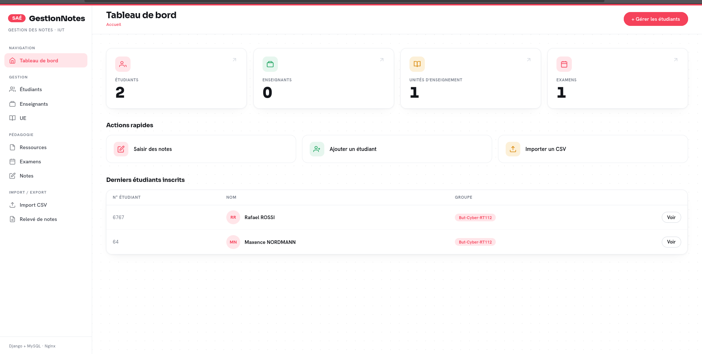

Fiche Portfolio Individuelle
SAÉ 2.03 — Déploiement & interface d'un gestionnaire de notes
Dans le cadre de la SAÉ 2.03, notre équipe avait pour mission de mettre en place une solution informatique complète pour une entreprise. Nous avons développé puis déployé une application web : un gestionnaire de notes destiné à un IUT.
L'application permet de gérer, via des opérations CRUD complètes (créer, lire, modifier, supprimer), les étudiants, les enseignants, les unités d'enseignement (UE), les ressources, les examens et les notes, ainsi que de générer un relevé de notes pour un étudiant. Elle est développée avec le framework Django (Python) et s'appuie sur une base de données MySQL.
Au-delà du développement, la SAÉ exigeait un déploiement dans une architecture réaliste de production : le service web et la base de données hébergés sur deux machines distinctes (service web et base de données séparés).
Le travail a été mené en équipe, avec une répartition des tâches via des branches Git. Ma responsabilité personnelle portait sur le déploiement du serveur web et sur l'interface de l'application ; la machine hébergeant la base de données était gérée par un coéquipier.
Ma contribution s'est concentrée sur trois volets : le déploiement et l'administration du serveur web, la conception de l'interface, et la gestion de version.
Ce travail m'a permis de mobiliser plusieurs compétences du référentiel du BUT Informatique. Le tableau ci-dessous associe chaque compétence à une réalisation concrète et à sa preuve.
| Compétence | Ce que j'ai réalisé | Preuve |
|---|---|---|
| Administrer des systèmes communicants | Déploiement et configuration du serveur de production : Nginx (reverse proxy), Gunicorn (WSGI), service systemd, pare-feu ufw, architecture web/BD séparée sur deux VM. | Fichiers gunicorn.service / config Nginxnginxsocketservice |
| Réaliser / optimiser une application | Participation à l'application Django (CRUD) et refonte complète de l'interface (CSS), amélioration du tableau de bord. | Pages de l'application, code des templates et des vues. capture |
| Gérer des données de l'information | Configuration de la connexion à la base MySQL distante (settings.py) et application des migrations Django. | Bloc DATABASES de settings.py, tables créées. capture |
| Collaborer au sein d'une équipe | Utilisation de Git : branche dédiée, fusion avec la branche principale, résolution de conflits. | Historique et branches Git. historique branche |
| Conduire un projet | Automatisation du lancement (script start.sh), procédure de déploiement reproductible et documentée. | Script start.sh, procédure pull → migrate → collectstatic → restart. |

C'est lors de la phase de déploiement que j'ai le plus appris, souvent en résolvant des erreurs réelles : un service refusant de démarrer parce qu'il référençait un utilisateur inexistant, le pilote MySQL de Python échouant à se compiler faute de bibliothèques système, ou encore Git refusant de fusionner à cause de fichiers qui n'auraient jamais dû être versionnés. Chaque problème m'a obligé à comprendre une couche supplémentaire du système.
Je suis désormais capable d'expliquer le trajet complet d'une requête : du navigateur jusqu'à Nginx, puis Gunicorn, puis Django, et enfin la base de données distante.
English
As part of the SAÉ 2.03, our team developed and deployed a web-based grade-management application for an IUT, built with Django (Python) and a MySQL database. My personal role was the production deployment and the user interface. I configured a Debian server running Nginx as a reverse proxy in front of Gunicorn, which runs the Django application, while the database was hosted on a separate virtual machine — a “separated web service and database” architecture. I set Gunicorn up as a systemd service for automatic startup and recovery, managed deployment through Git, and redesigned the application's interface. This project strengthened my skills in system administration, application deployment, and teamwork.